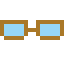
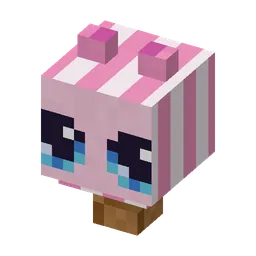
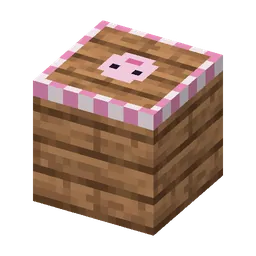
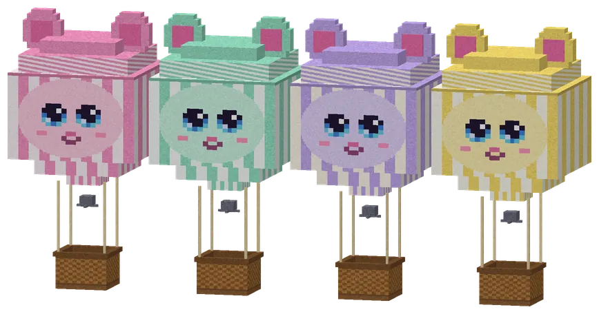
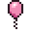
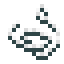
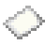

Kapitein Wolkje neemt je mee in zijn guh-luchtballon, langs de mooiste uitzichten
Het Ballonfestival
On the Guhvelden and the Roze pluisjes: balloons in four colours, a grandstand, a tent with a guh-faced portal and a lookout tower with a giant guh head. Kapitein Wolkje takes you on a guided round flight in a guh-luchtballon (no steering needed: just enjoy the view while he tells you what you see). Every viewpoint gives a stamp on your ballonstempelkaart (8 stamps, four routes), and every flight pays ballonmunten for his shop (the ballonpet, the ballonbril, a mini-luchtballon to put down and the ballonsteiger).
Op de Guhvelden en de Roze pluisjes: ballonnen in vier kleuren, een tribune, een tent met een guhgezicht-portaal en een uitkijktoren met een reuzenguhkop. Kapitein Wolkje neemt je mee op een rondvlucht met gids in een guh-luchtballon (sturen hoeft niet: geniet van het uitzicht terwijl hij vertelt wat je ziet). Elk uitzichtpunt geeft een stempel op je ballonstempelkaart (8 stempels, vier routes), en elke vlucht betaalt ballonmunten voor zijn winkeltje (de ballonpet, de ballonbril, een mini-luchtballonnetje om neer te zetten en de ballonsteiger).






Guh-luchtballonnen
Roze, mint, lavendel and citroen, each with guh ears on top.
Roze, mint, lavendel en citroen, elk met guhoortjes erop.
LootBuit
| ItemVoorwerp | CountAantal | ChanceKans |
|---|---|---|
| 1–3 | oftenvaak | |
| Mini-luchtballon | 1–2 | oftenvaak |
| 6–14 | oftenvaak | |
 Guh-ballon | 1–3 | oftenvaak |
 Draad | 2–6 | oftenvaak |
 Papier | 2–5 | sometimessoms |
| 1–3 | sometimessoms | |
| 1–3 | 30% |